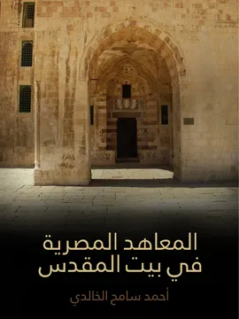

المعاهد المصرية في بيت المقدس

قراءة عربية أصلية محددة النطاق في الصفحات 9 إلى 12 من ملف PDF المرتبط، وليست تلخيصا كاملا للكتاب. نناقش ما تدعمه هذه المقاطع فقط.
مدارس بيت المقدس المملوكية وواقفوها
يضيق المقام بالمؤلف عن تعداد جميع المعاهد فيكتفي بأسماء أشهرها مع أسماء واقفيها: المدرسة الجاولية لواقفها الأمير علم الدين سنجر الجاولي نائب غزة المتوفى سنة ٧٤٥هـ، والمدرسة الفارسية أنشأها الأمير فارس البكي نائب السلطنة المصرية بالأعمال الساحلية ومن أوقافها قرية طور كرم، وهي مدينة طولكرم الآن، سنة ٧٥٥هـ، والمدرسة المنجكية وهي خانقاه ومدرسة لواقفها الأمير منجك نائب الشام سنة ٧٦٢هـ، والمدرسة والزاوية اللؤلؤية في أواخر القرن الثامن، والمدرسة البرقوقية ويرجح أنها للظاهر برقوق، والمدرسة الجهاركسية للأمير جهاركس أمير آخور الملك الظاهر سنة ٧٩١هـ، والمدرسة الطولونية نسبة إلى شهاب الدين الطولوني الناصري أنشئت قبل الثمانمائة، والمدرسة الباسطية نسبة إلى زين الدين عبد الباسط ناظر الجيوش سنة ١٣٩٧م، والمدرسة الغادرية نسبة إلى الأمير ناصر الدين دلغادر عمّرتها زوجته مصر خاتون سنة ٨٣٦هـ، والمدرسة الحسنية نسبة إلى الأمير حسن الكشكيلي ناظر الحرمين سنة ٨٣٧هـ، والمدرسة المزهرية أنشأها أبو بكر بن مزهر صاحب ديوان الإنشاء.
زاوية وحدود القراءة
قراءة موجزة من ص ٩ إلى ص ١٢ من أصل ١٢ صفحة، تعرض أواسط الكراسة، لا الكراسة كاملة.
الطبعة والقراءة
هذه النسخة من الكتاب صادرة ومتاحة مجانًا من مؤسسة هنداوي بشكل قانوني؛ حيث إن نص الكتاب يقع في نطاق الملكية العامة تبعًا لقوانين الملكية الفكرية.
تنزيل PDF المجاني ↓ القراءة والمصدر الرسمي ↗